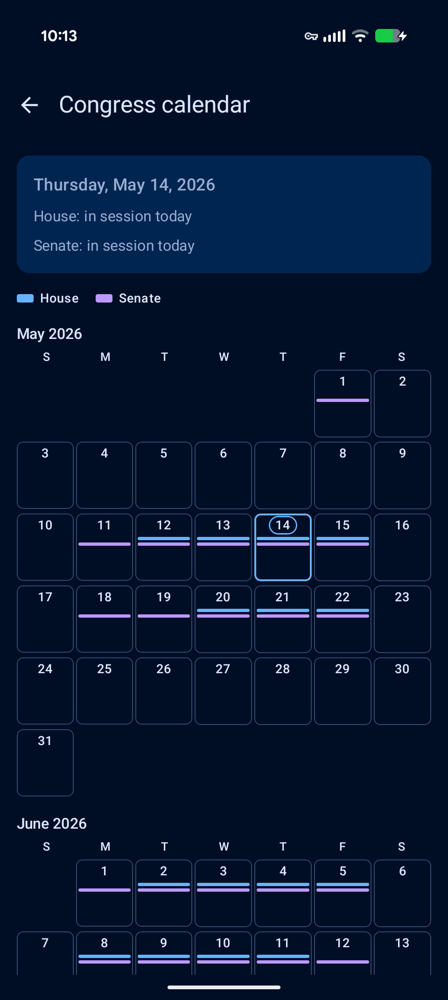
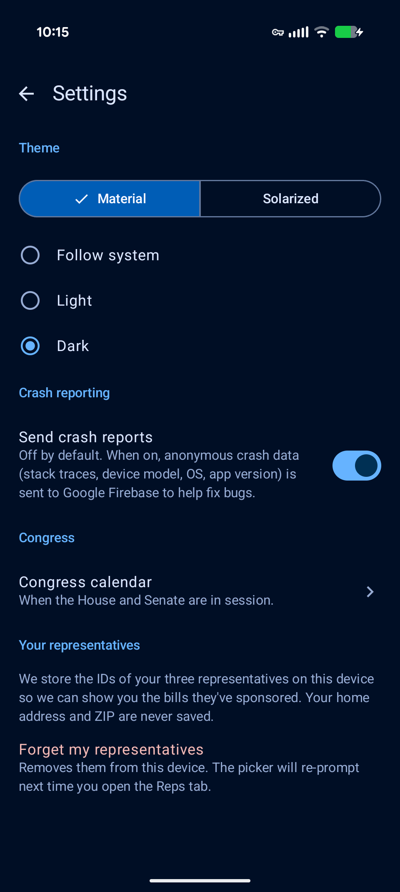

Informed Citizen
A free, open-source app that shows you what your Congress is actually doing — which bills moved this week, when the House and Senate are next in session, and who represents you. Plus a one-tap handoff to ChatGPT, Claude, or Gemini when you want a bill explained in plain English.
Mission
Bills are written for lawyers. The U.S. Congressional record is, in principle, public — but in practice it's spread across half a dozen government sites, formatted for institutional consumers. Informed Citizen pulls that record into one place, formats it for a phone, and lets you hand the rest to an AI assistant you already trust.
Our commitments
Free, forever. No price tag. No paid tier. No "premium" version waiting in the wings.
No accounts. There is nothing to sign up for. The app has no notion of a user.
No ads, no third-party tracking, no analytics. We don't sell your attention, because we don't collect it.
No personal data leaves your device without your knowing. We don't even collect crash data unless you turn it on in Settings.
The data is public, the code is public. Every bill we show comes from Congress.gov; every line of the app and its data pipeline is Apache-2.0 on GitHub. You can fork it, audit it, or stand up your own copy.
No LLM of our own. When you want a bill explained, the app builds a structured prompt and hands it to whichever AI app you choose. Anthropic, OpenAI, Google, or any share-sheet target — your bill, your AI relationship.
Features
Browse recently voted-on bills.
Filter by passed, failed, enacted, or vetoed. Today's feed covers the 119th Congress, with the 93rd onward backfilled in the background.
Hand it to an AI.
A "Summarize with AI" sheet builds a structured prompt and sends it via Android's share menu to ChatGPT, Claude, Gemini, or anything else you've installed. The app ships no AI of its own.
Read a bill.
Sponsor, latest action, the full Congressional Research Service plain-English summary when one's published, and a one-tap jump to the canonical text on Congress.gov.
Is Congress in session?
A status line tells you whether the House and Senate are in today, and a calendar grid shows the next two months of session days.

Who represents you?
Save your state and district, or look it up by ZIP. Open any representative's page to see their sponsored and cosponsored bills, dial their D.C. office, or open their contact page.
Yours to tune.
Material or Solarized theme; light, dark, or system. Crash reporting is off by default and lives behind a Settings toggle.

Install
Informed Citizen is in pre-publication review with Google Play. Once it's live, this section becomes a Get-it-on-Google-Play badge. For now, the build-from-source path below works.
git clone https://github.com/nukeforum/bill-summarizer
cd bill-summarizer/android
./gradlew :app:installDebugMin SDK is Android 8 (API 26). The first build downloads Gradle 9.4.1 and the AGP 9.2.0 toolchain. See the README for the full toolchain notes.
Run your own pipeline
The data the app reads is published as plain JSON to GitHub Pages, built by GitHub Actions workflows from public sources (Congress.gov, the House Clerk's voting-days ICS, the Senate session XML, and HUD's USPS ZIP crosswalk). The whole thing is Apache-2.0, and you can fork it and point it at your own GitHub Pages site so nothing relies on this deployment staying online.